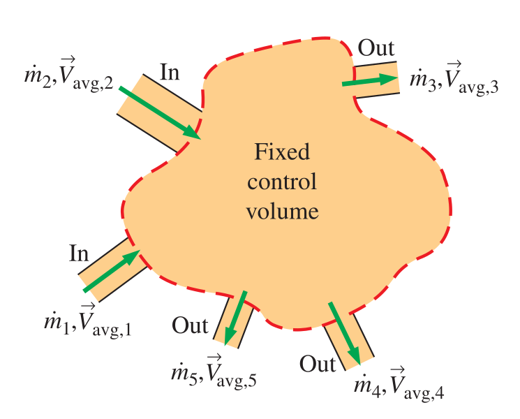
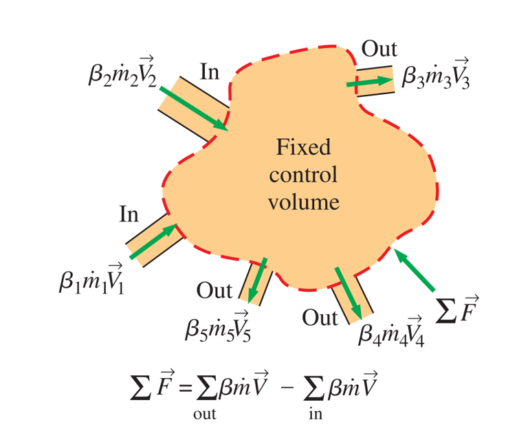

\[V_1 = 7\,\mathrm{mph} = 10.27\,\mathrm{ft/s}\]
\[\dot{m} = \rho_1 V_1 A_1 = \rho_1 V_1 \dfrac{\pi D^2}{4} = (0.076)(10.27)\dfrac{\pi(30)^2}{4}\] \[= 551.7\,\mathrm{lb/s}\]
\[\dot{W} = \dot{m} \dfrac{V_1^2}{2}\]
\[\dot{W} = (551.7)(10.27^2/2) = 1.225\,\mathrm{kW}\]
\[\eta = \dfrac{\dot{W}_{\text{actual}}}{\dot{W}_{\text{max}}} = \dfrac{0.4}{1.225} = 0.327\] or \[32.7\%\]
\[\dot{m} \dfrac{V_2^2}{2} = \dot{m} \dfrac{V_1^2}{2} (1 - \eta)\]
\[V_2 = V_1 \sqrt{1 - \eta} = (10.27) \sqrt{1 - 0.327} = 8.43\,\mathrm{ft/s}\]
How do we calculate the force on the mast?
\[\vec{F} = m \vec{a}\]
\[\sum \vec{F} = m \vec{a} = m \dfrac{d\vec{V}}{dt} = \dfrac{d}{dt} \left( m \vec{V} \right)\] where \(m\vec{V}\) is the linear momentum of the system
\[\dfrac{dB_{\text{sys}}}{dt} = \dfrac{d}{dt} \int_{\text{CV}} \rho b d V\kern-0.8em\raise0.3ex- + \int_{\text{CS}} \rho b \left( \vec{V} \cdot \vec{n} \right) dA\]
\[B=m \vec{V}~~~~~b=\vec{V}\]
\[\dfrac{\left( m \vec{V} \right)_{\text{sys}}}{dt} = \dfrac{d}{dt} \int_{\text{CV}} \rho \vec{V} d V\kern-0.8em\raise0.3ex- + \int_{\text{CS}} \rho \vec{V} \left( \vec{V}_r \cdot \vec{n} \right) dA\]
\[\boxed{\sum \vec{F} = \dfrac{d}{dt} \int_{\text{CV}} \rho \vec{V} d V\kern-0.8em\raise0.3ex- + \int_{\text{CS}} \rho \vec{V} \left( \vec{V}_r \cdot \vec{n} \right) dA}\]
When fixed CV \[\vec{V}_r = \vec{V}\]
 \[\int_A \rho \vec{V} \left( \vec{V} \cdot \vec{n} \right) dA = \rho V_{\text{avg}} A \vec{V}_{\text{avg}} = \dot{m} \vec{V}_{\text{avg}}\] assuming uniform velocity \(\vec{V} = \vec{V}_{\text{avg}}\)
\[\boxed{\sum \vec{F} = \dfrac{d}{dt} \left( \int_{\text{CV}} \vec{V} \rho d V\kern-0.8em\raise0.3ex- \right) + \sum \left( \dot{m}_i \vec{V}_i \right)_{\text{out}} - \sum \left( \dot{m}_i \vec{V}_i \right)_{\text{in}}}\]
But is velocity actually uniform?
\[ \int_A \rho \vec{V} \left( \vec{V} \cdot \vec{n} \right) dA = \zeta \dot{m} \vec{V}_{\text{avg}}\]
\[\zeta = \dfrac{1}{A} \int_A \left( \dfrac{V}{V_{\text{avg}}} \right)^2 dA\]
\[\sum \vec{F} = \dfrac{d}{dt} \int_{\text{CV}} \rho \vec{V} d V\kern-0.8em\raise0.3ex- + \int_{\text{CS}} \rho \vec{V} \left( \vec{V} \cdot \vec{n} \right) dA\]
\[\sum \vec{F} = \cancelto{0}{\dfrac{d}{dt} \int_{\text{CV}} \rho \vec{V} d V\kern-0.8em\raise0.3ex-} + \sum\limits_{\text{out}} \dot{m} \vec{V} - \sum\limits_{\text{in}} \dot{m} \vec{V}\]
\[F_R = \dot{m} V_2 - \dot{m} V_1 = (551.7)(8.43 - 10.27)\] \[=-31.5\,\mathrm{lbf}\]
 \[\boxed{\sum \vec{F} = \sum_{\text{out}} \zeta \dot{m} \vec{V} - \sum_{\text{in}} \zeta \dot{m} \vec{V}}\]
Water flows steadily through an expanding elbow, and at the inlet of the elbow absolute pressure is 230 kPa and cross-sectional area is 0.004 m2. The direction of flow is 45°. At the outlet absolute pressure is 200 kPa, cross-sectional area is 0.01 m2, and velocity is 2 m/s. If water density is 1000 kg/m3, calculate the anchoring forces in x and y directions required to hold the elbow in place. Ignore frictional forces and the weights of water and the elbow.
We assume uniform flow at the elbow inlet and outlet, and atmospheric pressure of 101 kPa.
\[\sum \vec{F} = \dot{m}_2 \vec{V}_2 - \dot{m}_1 \vec{V}_1\]
\[R_x + P_1 A_1 \cos{\theta} - P_2 A_2 = (\rho A_2 V_2) V_2 - (\rho A_1 V_1) V_1 \cos{\theta}\]
\[V_1 = V_2 \dfrac{A_2}{A_1} = (2)\dfrac{0.01}{0.004} = 5\,\mathrm{m/s}\]
Rx = -(230-101)(0.004)cos{45} + (200-101)(0.01) + (1000)[(0.01)(2)2 - (0.004)(5)2 cos{45^}]\[ \] = 594.4\,\mathrm{N}$$
\[R_y + P_1 A_1 \sin{\theta} = 0 - (\rho A_1 V_1) V_1 \sin{\theta}\]
\[R_y = -(230-101)(0.004) \sin{45} - (1000)(0.004)(5)^2 \sin{45}\] \[= -435.6\,\mathrm{N}\]